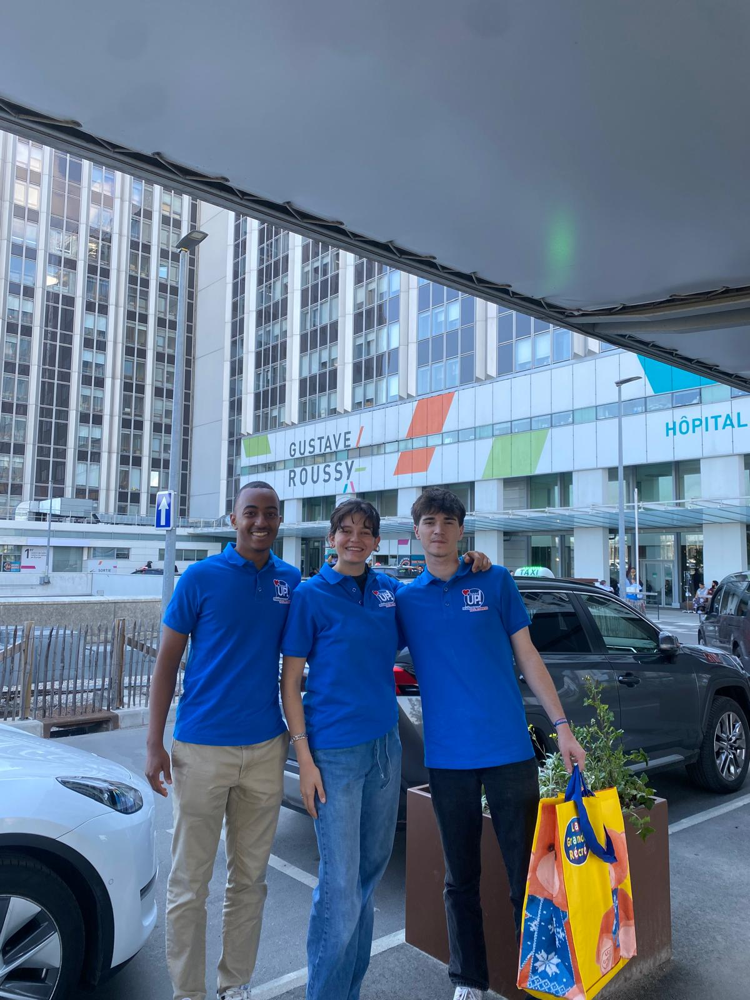
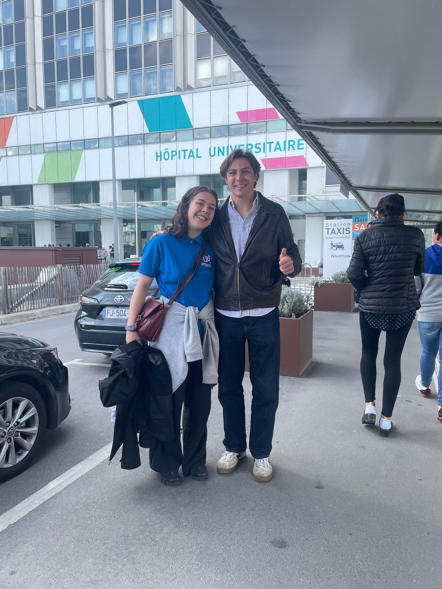
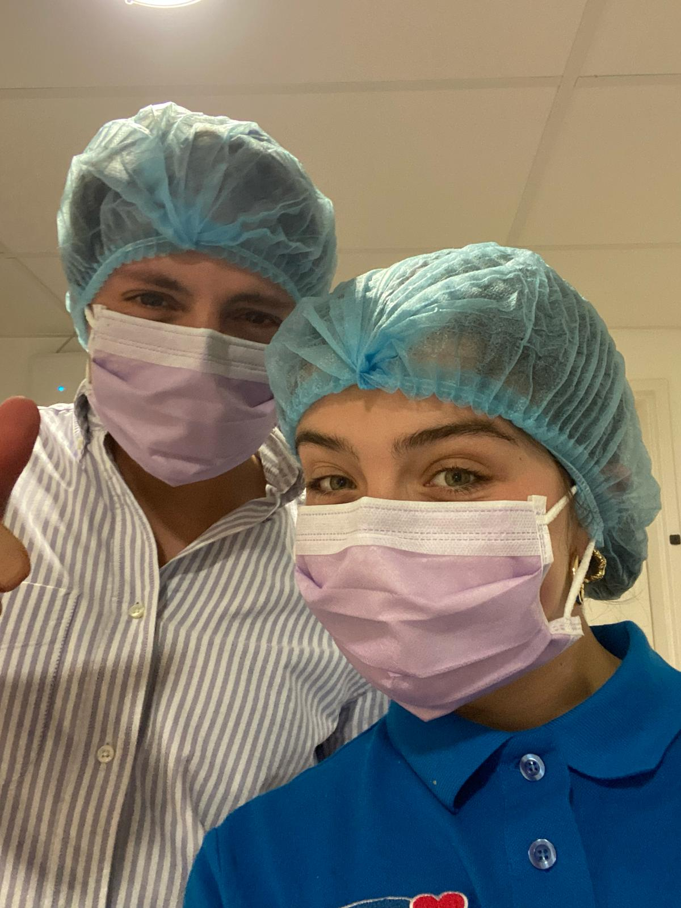
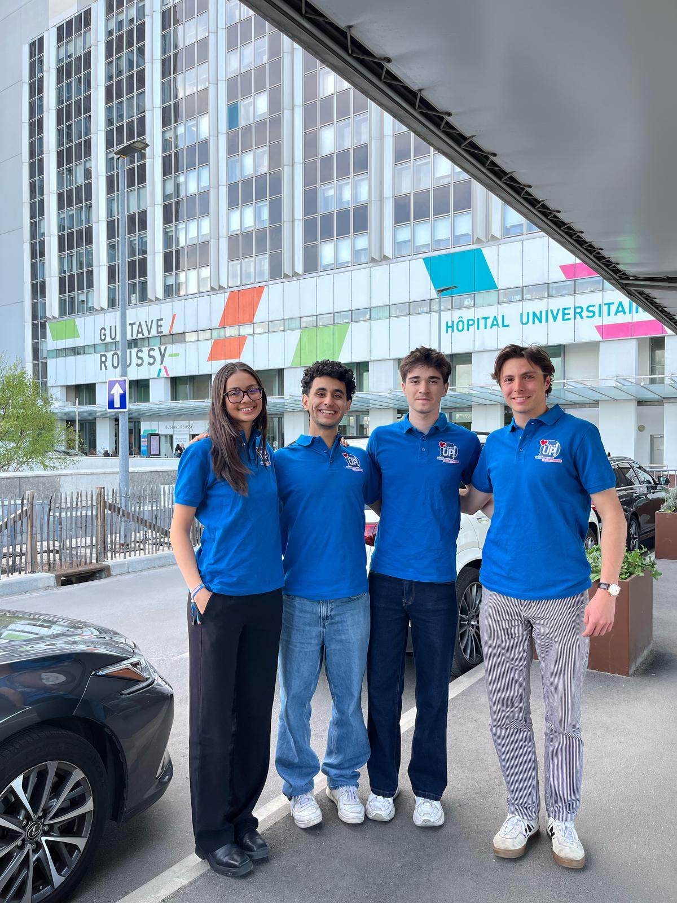
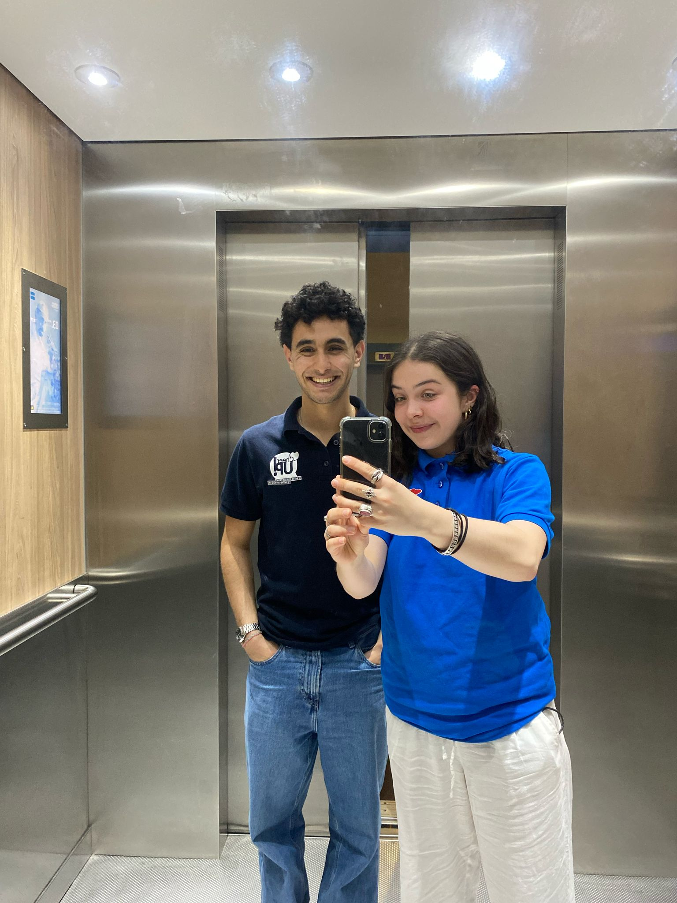
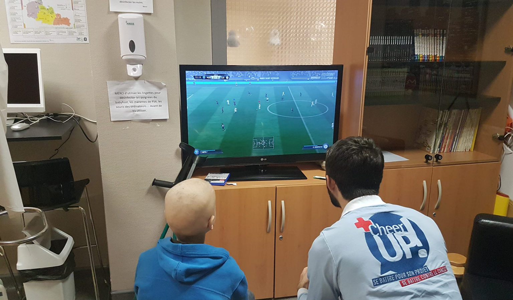

Visites à L'hôpital
Cheer Up est une association engagée auprès des jeunes atteints de cancer, hospitalisés à l'Institut Gustave Roussy. Ses bénévoles rendent visite aux patients pour leur offrir écoute, soutien et moments de partage. À travers des échanges bienveillants, Cheer Up aide les jeunes à retrouver confiance et motivation pendant leur parcours de soins. L’objectif est de redonner espoir et sourire à ceux qui traversent une période difficile.





